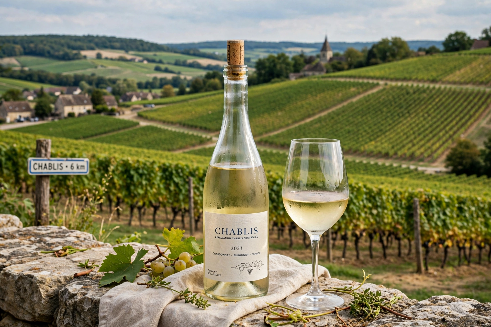

Chablis is a town and wine region in the Yonne department of Bourgogne-Franche-Comté, northern France. Its name is world-famous for dry white wines made exclusively from Chardonnay grown on Kimmeridgian limestone soils.

| Country | France |
|---|---|
| Department | Yonne |
| Wine type | Dry white, Chardonnay |
The appellations run Petit Chablis, Chablis, Chablis Premier Cru (such as Montée de Tonnerre and Fourchaume) and Chablis Grand Cru — seven climats on a single hillside above the town, including Les Clos and Vaudésir. The cool climate and fossil-rich marl give lean, steely wines with citrus and mineral notes, traditionally unoaked or lightly oaked.
The commune lies on the Serein river, with the medieval church of Saint-Martin and the Porte Noël gate among its sights. Spring frost is a major hazard, countered with smudge pots and aspersion sprinkling.